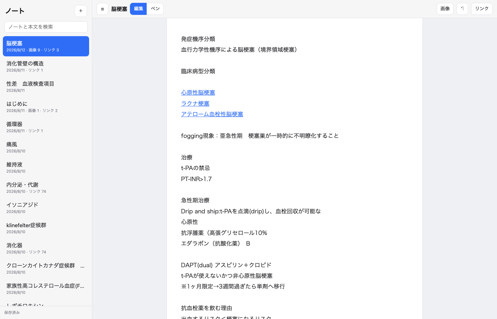

← 作ったもの一覧へ

作った理由
Obsidianで医学の知識をまとめていましたが、「画像を横に並べて比較する」「画像に直接書き込む」がうまくできず、ずっと不便でした。プラグインで解決を試みましたが、結局は自分の使い方に合わせて作った方が早いと判断しました。
できること
- Obsidianと同じように、上から下へ普通に文章を書いていく
- [[リンク]] で他のノートとつながる。存在しなければタップで新規作成
- 画像はWordの図のように、好きな場所へドラッグして自由に配置
- 「ペン」モードに切り替えると、文章や画像の上から直接手書きできる（Apple Pencil対応）
- 画像に写った文字をOCRで自動認識し、検索対象にする
- 既存のObsidian vault（980ノート・画像447枚）をそのまま取り込み済み
技術
- フロントエンド
- Vanilla JS。SVGでペンのストロークを描画し、筆圧・傾きに対応
- データ保存
- Node.jsの薄いサーバー越しに、ノート1件＝JSON1ファイルとして保存。特別なデータベースを使わないぶん壊れにくい
- OCR
- tesseract.js（ブラウザ・Node両対応）で日本語＋英語の混在文を認識
まだ自分のMac上でローカルサーバーとして動かしているだけで、公開URLはありません。医学知識を毎日ここにまとめながら、使いながら直しています。